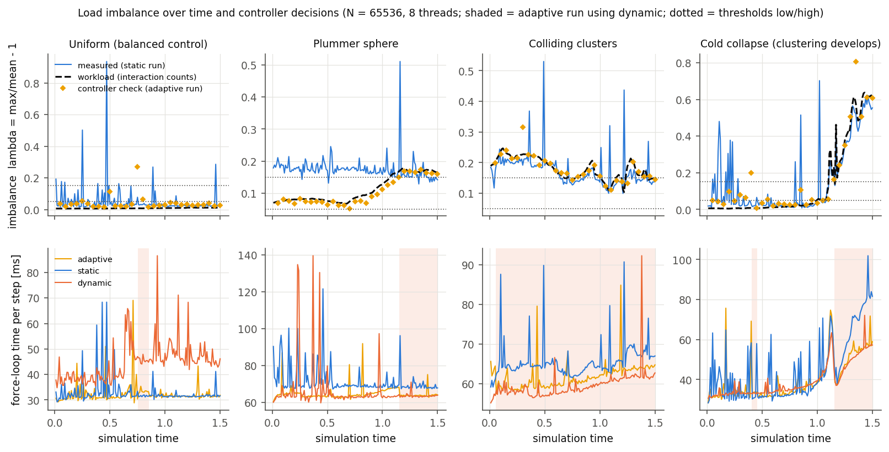
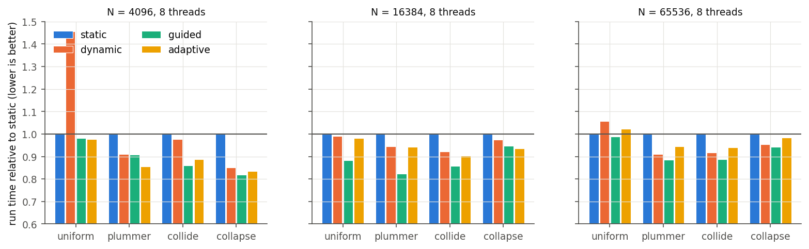
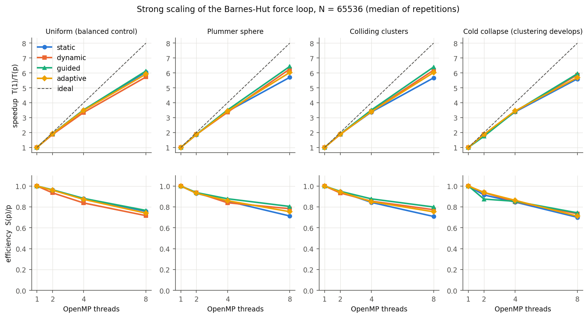
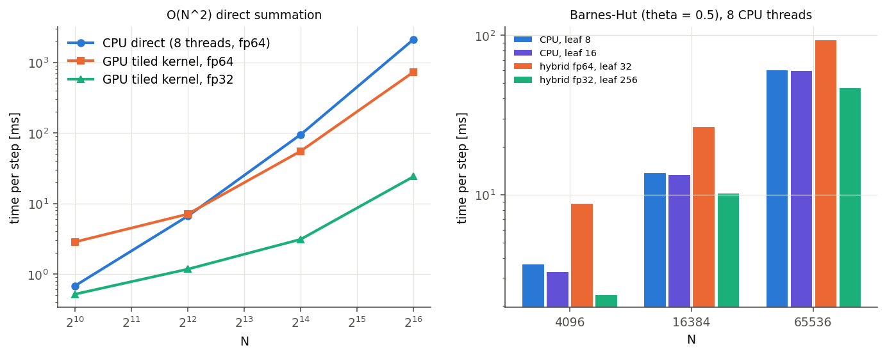
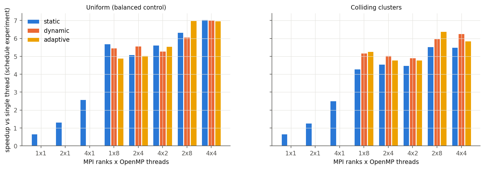

Adaptive scheduling for a parallel star simulation
PCAP project · Tanish Hemant Kuvar, M. Vishal Kumar, Samyak Jain · MPI + OpenMP + CUDA
1The idea in one minute
We simulate thousands of stars pulling on each other by gravity. Every step, the force on each star must be calculated — that is the expensive part, so 8 workers (the CPU's 8 cores) share it.
- Equal shares (OpenMP “static”): every worker gets the same number of stars.
- The problem: stars form clumps. A star inside a clump has many close neighbours and takes much longer to calculate — so the worker holding the clump falls behind while the others sit idle.
- Our solution: a small manager (the “adaptive controller”) measures every few steps how long each worker took. If the slowest one is too far behind, it switches to “grab work when free” (OpenMP “dynamic”), so nobody waits. When things are balanced again it switches back.
λ (lambda) = how far behind the slowest worker is. λ = 0 means everyone finished together; λ = 0.5 means the slowest needed 50 % longer than average.
2Watch it happen
Each dot is a star; its colour shows which worker calculates it.
- Left – equal shares: every worker owns a region of space. When the cloud collapses into a clump, the workers holding it get tall bars (slow) and the rest get short bars (waiting).
- Right – our manager: at the dotted line it switches to “grab work when free”: the colours mix and all bars become equal.
- Bottom: total time used. After the switch the manager pulls ahead.
“Equal shares can't react when stars clump. Our manager notices the imbalance and fixes it automatically.”
3How the imbalance grows over time

4Which way of sharing wins?

Honest finding: OpenMP's built-in “guided” schedule was as good or better on this laptop. So the manager's value is that you never have to pick a schedule by hand — it reliably beats equal shares and costs nothing when there is no clumping.
5How much faster with more workers?

6The graphics card (CUDA)

7Splitting across separate programs (MPI)

8Conclusion
| Question | Answer |
|---|---|
| Is it correct? | Yes — 8 automatic checks: accuracy vs the exact calculation (0.25 %), energy conserved, and identical results for every way of splitting the work. |
| Does clumping hurt equal shares? | Yes — the slowest worker falls up to 50–60 % behind. |
| Does our manager help? | Yes, versus equal shares: faster on every clumpy cloud (up to 17 %), no cost when balanced. |
| Is it the best possible? | No — the built-in “guided” schedule was equally good here. |
| Next steps | Balance work between programs too (done by Vishal: --partition cost),
and let the manager pick the best schedule itself (--balanced auto). |
Full details: RESULTS.md and README.md
in the project folder. Measured on an Intel i7-14700HX + RTX 4060 laptop.